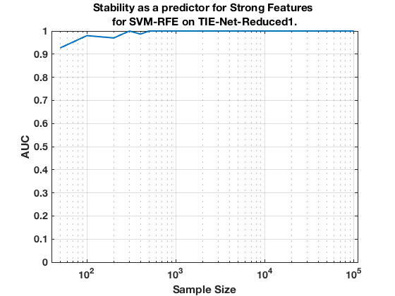

TIE-Net-Reduced1. Summary. SVM-RFE.
summary_stability_type("RedNet", 2)
TOTAL COUNTS: Total=35, Strong=5, Weak=26, Irrelevant=4
Figure 49. Stability as a predictor for Strong Features for SVM-RFE on TIE-Net-Reduced1.
_________________________________________________________________________________________

Table 49. Breakdown of Stability by Feature Type for SVM-RFE.
______________________________________________________________
(1) Number Features Repeat (n_fs_rep): number of unique features that were selected in a repeat
(2) Number Features Fold (n_fs_fold): number of unique features that were selected in a fold
(3) Feature Stability ~ Feature Selection Frequency
Sample_Size All_n_fs_rep All_n_fs_fold All_Stability
___________ _____________________ _____________________ ___________________
' 50 ' ' 4.740 +/- 0.073 ' ' 1.224 +/- 0.008 ' ' 0.035 +/- 0.078 '
' 100 ' ' 2.940 +/- 0.041 ' ' 1.080 +/- 0.004 ' ' 0.031 +/- 0.099 '
' 200 ' ' 3.140 +/- 0.078 ' ' 1.186 +/- 0.008 ' ' 0.034 +/- 0.136 '
' 300 ' ' 4.700 +/- 0.148 ' ' 1.428 +/- 0.017 ' ' 0.041 +/- 0.147 '
' 400 ' ' 6.740 +/- 0.203 ' ' 1.708 +/- 0.024 ' ' 0.049 +/- 0.144 '
' 500 ' ' 4.400 +/- 0.084 ' ' 1.524 +/- 0.012 ' ' 0.044 +/- 0.156 '
' 1000 ' ' 9.920 +/- 0.189 ' ' 2.506 +/- 0.029 ' ' 0.072 +/- 0.173 '
' 2000 ' ' 11.300 +/- 0.145 ' ' 3.482 +/- 0.030 ' ' 0.099 +/- 0.197 '
' 5000 ' ' 15.340 +/- 0.173 ' ' 6.946 +/- 0.029 ' ' 0.198 +/- 0.299 '
' 10000 ' ' 14.840 +/- 0.141 ' ' 8.202 +/- 0.035 ' ' 0.234 +/- 0.352 '
' 100000 ' ' 14.000 +/- 0.115 ' ' 7.632 +/- 0.022 ' ' 0.218 +/- 0.350 '
Sample_Size Strong_n_fs_rep Strong_n_fs_fold Strong_Stability
___________ _____________________ _____________________ ___________________
' 50 ' ' 2.180 +/- 0.020 ' ' 0.808 +/- 0.006 ' ' 0.162 +/- 0.162 '
' 100 ' ' 2.080 +/- 0.017 ' ' 0.938 +/- 0.004 ' ' 0.188 +/- 0.217 '
' 200 ' ' 2.080 +/- 0.022 ' ' 1.068 +/- 0.003 ' ' 0.214 +/- 0.331 '
' 300 ' ' 2.400 +/- 0.026 ' ' 1.182 +/- 0.004 ' ' 0.236 +/- 0.357 '
' 400 ' ' 2.740 +/- 0.027 ' ' 1.272 +/- 0.006 ' ' 0.254 +/- 0.338 '
' 500 ' ' 2.880 +/- 0.025 ' ' 1.342 +/- 0.005 ' ' 0.268 +/- 0.363 '
' 1000 ' ' 4.240 +/- 0.021 ' ' 1.784 +/- 0.009 ' ' 0.357 +/- 0.365 '
' 2000 ' ' 4.760 +/- 0.013 ' ' 2.388 +/- 0.011 ' ' 0.478 +/- 0.310 '
' 5000 ' ' 5.000 +/- 0.000 ' ' 3.968 +/- 0.008 ' ' 0.794 +/- 0.133 '
' 10000 ' ' 4.980 +/- 0.003 ' ' 4.646 +/- 0.006 ' ' 0.929 +/- 0.076 '
' 100000 ' ' 5.000 +/- 0.000 ' ' 4.632 +/- 0.002 ' ' 0.926 +/- 0.165 '
Sample_Size Weak_n_fs_rep Weak_n_fs_fold Weak_Stability
___________ _____________________ _____________________ ___________________
' 50 ' ' 2.340 +/- 0.055 ' ' 0.386 +/- 0.009 ' ' 0.015 +/- 0.016 '
' 100 ' ' 0.820 +/- 0.030 ' ' 0.138 +/- 0.005 ' ' 0.005 +/- 0.011 '
' 200 ' ' 1.000 +/- 0.055 ' ' 0.112 +/- 0.006 ' ' 0.004 +/- 0.006 '
' 300 ' ' 2.060 +/- 0.113 ' ' 0.222 +/- 0.012 ' ' 0.009 +/- 0.006 '
' 400 ' ' 3.600 +/- 0.161 ' ' 0.396 +/- 0.017 ' ' 0.015 +/- 0.008 '
' 500 ' ' 1.480 +/- 0.064 ' ' 0.178 +/- 0.008 ' ' 0.007 +/- 0.009 '
' 1000 ' ' 5.200 +/- 0.156 ' ' 0.672 +/- 0.021 ' ' 0.026 +/- 0.024 '
' 2000 ' ' 6.240 +/- 0.123 ' ' 1.064 +/- 0.020 ' ' 0.041 +/- 0.063 '
' 5000 ' ' 9.600 +/- 0.147 ' ' 2.900 +/- 0.023 ' ' 0.112 +/- 0.186 '
' 10000 ' ' 9.300 +/- 0.121 ' ' 3.484 +/- 0.029 ' ' 0.134 +/- 0.230 '
' 100000 ' ' 8.520 +/- 0.100 ' ' 2.946 +/- 0.019 ' ' 0.113 +/- 0.209 '
Sample_Size Irrelevant_n_fs_rep Irrelevant_n_fs_fold Irrelevant_Stability
___________ ___________________ ____________________ ____________________
' 50 ' ' 0.220 +/- 0.012 ' ' 0.030 +/- 0.002 ' ' 0.007 +/- 0.002 '
' 100 ' ' 0.040 +/- 0.004 ' ' 0.004 +/- 0.000 ' ' 0.001 +/- 0.001 '
' 200 ' ' 0.060 +/- 0.006 ' ' 0.006 +/- 0.001 ' ' 0.002 +/- 0.002 '
' 300 ' ' 0.240 +/- 0.017 ' ' 0.024 +/- 0.002 ' ' 0.006 +/- 0.002 '
' 400 ' ' 0.400 +/- 0.024 ' ' 0.040 +/- 0.002 ' ' 0.010 +/- 0.000 '
' 500 ' ' 0.040 +/- 0.004 ' ' 0.004 +/- 0.000 ' ' 0.001 +/- 0.002 '
' 1000 ' ' 0.480 +/- 0.025 ' ' 0.050 +/- 0.003 ' ' 0.013 +/- 0.003 '
' 2000 ' ' 0.300 +/- 0.019 ' ' 0.030 +/- 0.002 ' ' 0.007 +/- 0.003 '
' 5000 ' ' 0.740 +/- 0.028 ' ' 0.078 +/- 0.003 ' ' 0.019 +/- 0.004 '
' 10000 ' ' 0.560 +/- 0.022 ' ' 0.072 +/- 0.003 ' ' 0.018 +/- 0.006 '
' 100000 ' ' 0.480 +/- 0.019 ' ' 0.054 +/- 0.002 ' ' 0.014 +/- 0.005 '